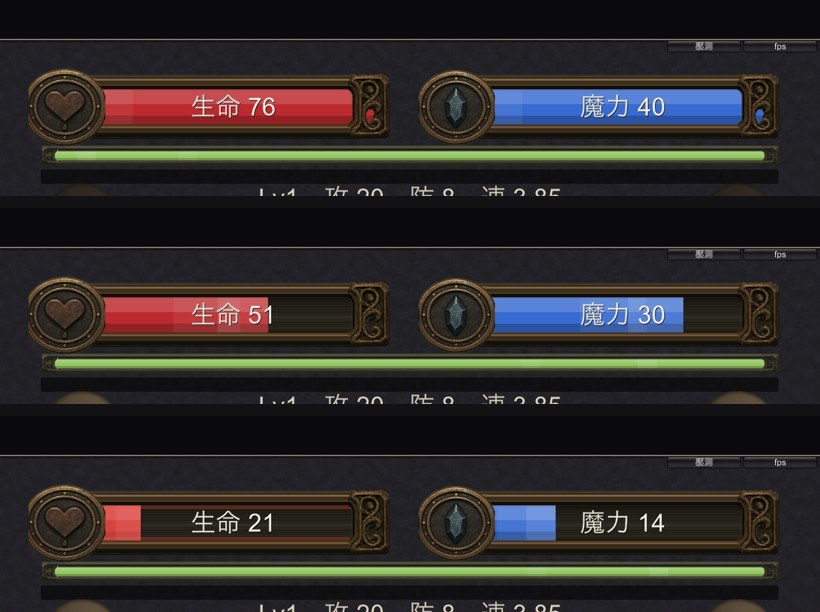
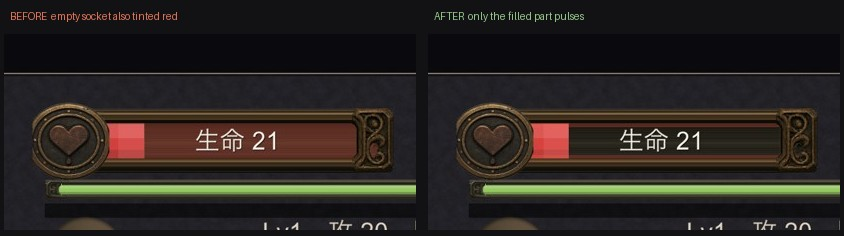
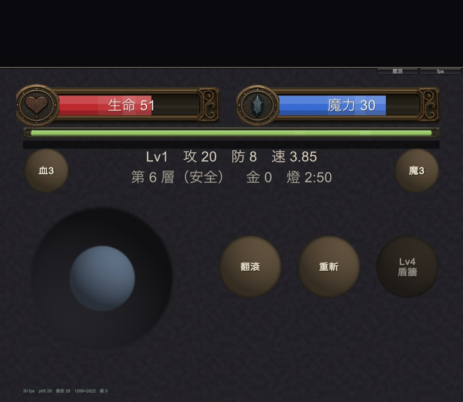

地城迴響 · 已套用
素材切成三段套進遊戲，血魔共用同一副外框、體力條一起換。下面全部是 iOS 模擬器的實機畫面，不是素材預覽。

| 部分 | 怎麼做的 | 為什麼 |
|---|---|---|
| 外框、內槽、徽記、細框 | AI 生成的素材，切成左帽／中段／右帽 | 雕刻質感程序化畫不出來 |
| 中段 | 平鋪，不是拉伸 | 條子的長寬比會隨機型改變，拉伸的話 iPad 上兩端的捲草紋會被壓扁 |
| 液面流動 | 兩層不同速度的亮帶疊加 | 單層看得出週期 |
| 低血脈動 | 程式，只在生命條上 | 魔力見底不會死，兩條都閃會分不出哪條急 |
| 掉血殘影 | 程式，只往下追 | 回血是好事，不需要慢動作重播 |
| 數字 | 加了深色描邊，往右讓開徽記 | 底下比原本的純色底花很多，白字有些位置讀不出來 |
第一版的低血脈動我畫在整個內框上，結果空掉的槽也跟著變紅。跟旁邊魔力條的黑色空槽一比就露餡——看起來像「血還有一大半」，正好跟這個效果要傳達的訊息相反。


只在 iPhone 的比例上看過。三段式就是為了 iPad 做的，但我還沒真的在 iPad 的長寬比下拍過。
動態效果是靜態截圖。流動、脈動、殘影都會動，截圖只能證明它畫在對的位置、對的範圍，證明不了看起來順不順。那要你在 TestFlight 上實際看。
經驗條還沒換。它在體力條下面、更細一條。細版框在那個高度可能已經看不清雕花，我想先看你對現在這版的反應再決定要不要一起換。
| 要決定的 | 為什麼輪不到我決定 |
|---|---|
| 徽記蓋住了左帽的雕花，要不要縮小或移位 | 現在徽記壓在左端、把那朵捲草紋整個蓋掉。看起來像「鑲上去的」也說得通，但那是美感判斷。 |
| 體力條的綠色要不要調暗 | 旁邊的金屬框很沉，那條綠相對鮮豔。搶眼有搶眼的用處（跑不動是即時資訊），要不要壓下去是取捨。 |
| 經驗條要不要一起換 | 見上。我的建議是換——不換的話它會變成這一區唯一的純色矩形，就跟先前體力條的處境一樣。 |